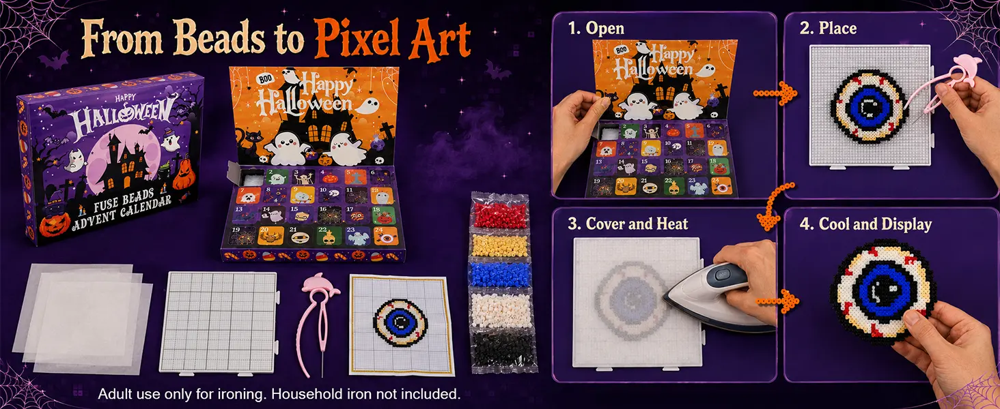
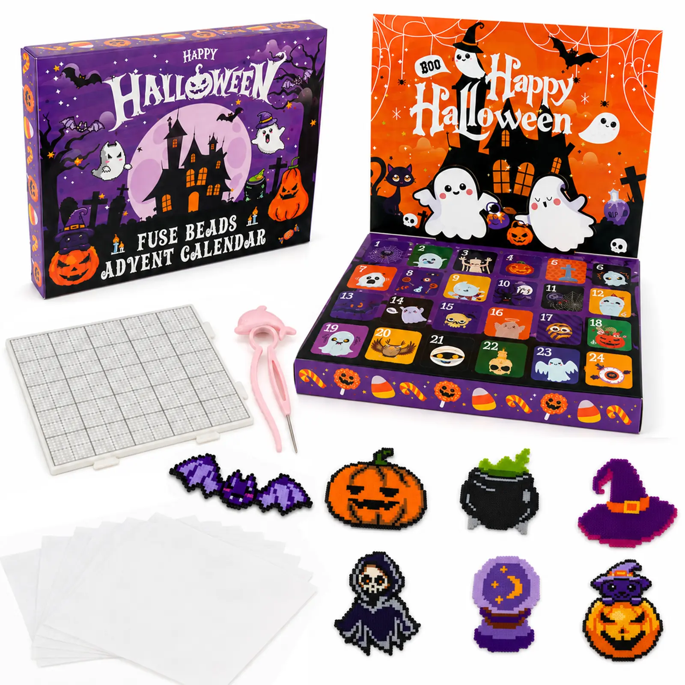
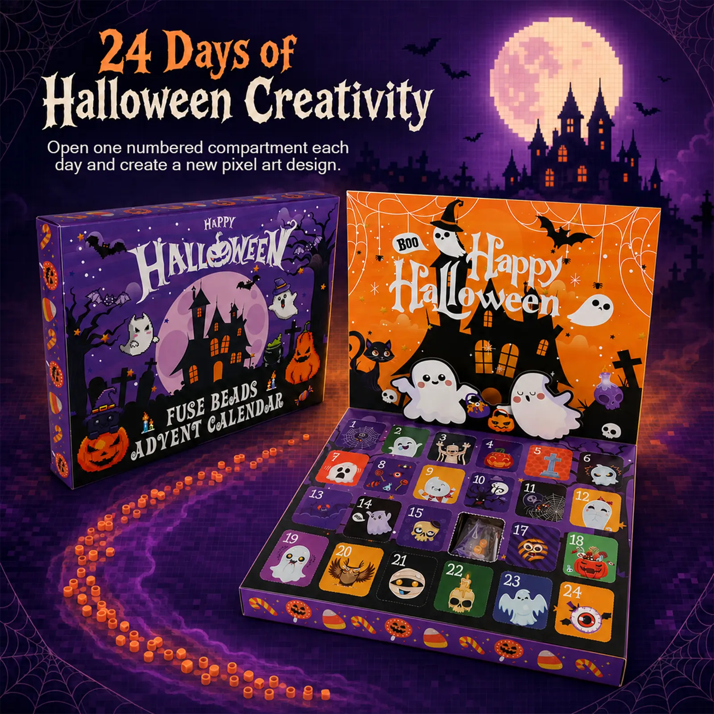
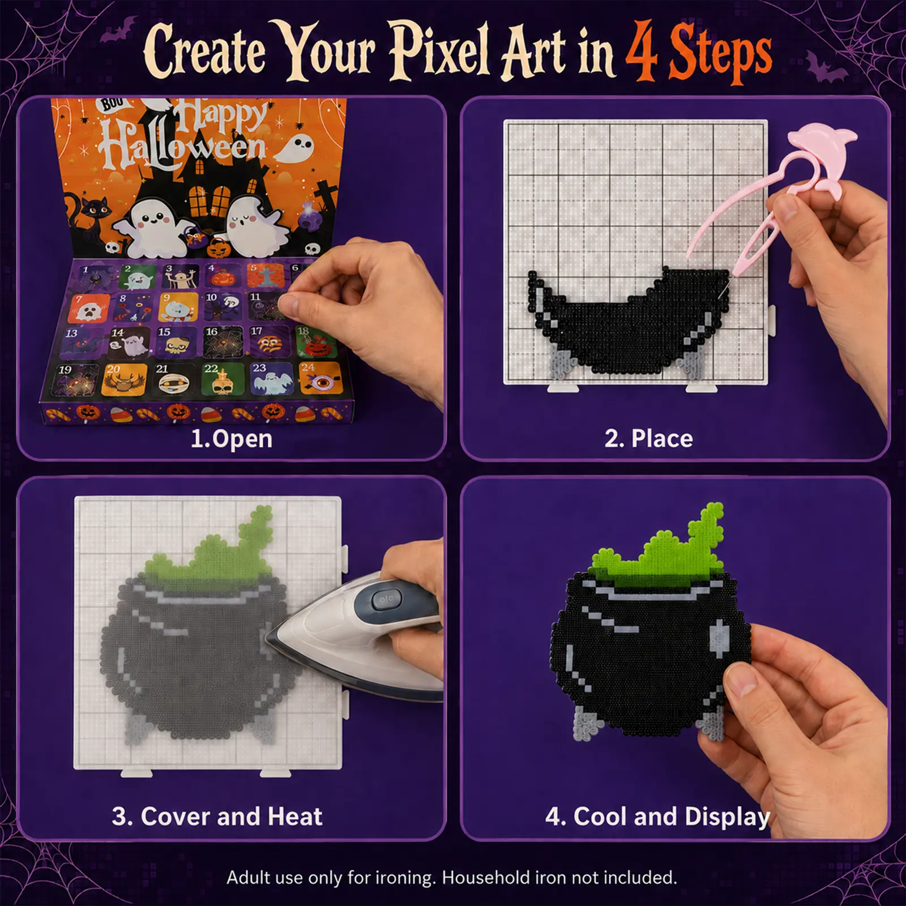
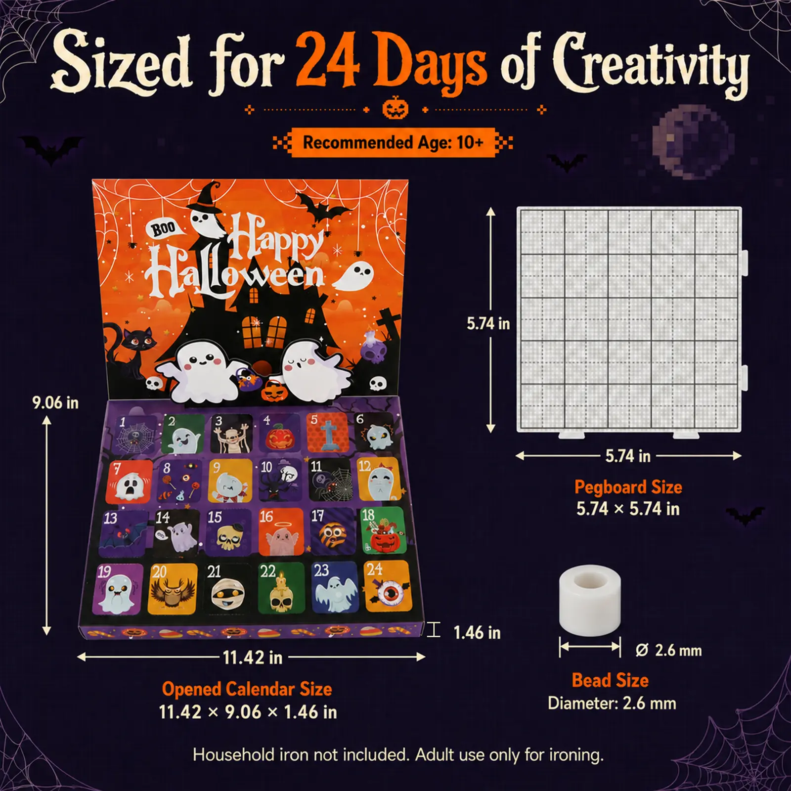

Skip to content
ZCF
.
Home
Fashion
Products
About
View Work
→
← Home
/
Products
/
Other Products
Halloween Fuse Bead Countdown Kit
Other Products · 16 images
← Back to results
A+
Main Images
Secondary Images
A+

Main Images

Secondary Images



← Previous project
Warm-Toned Autumn Garland
Next project →
A60 Smart Clear String Lights
← Back to results
Return to Home
↗
←
→
Open full-size
×